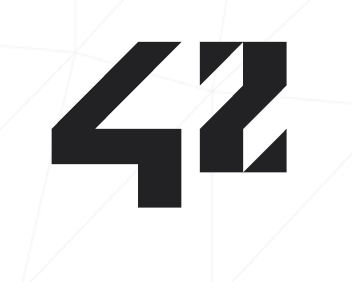

Le meetup de juin est un peu spécial: nous avons invité des personnes pour défendres les "autres" frameworks. Et oui, la communauté nous demande souvent comment Salt se compare à des frameworks comme Puppet, Chef ou Ansible. Avantages, inconvénients, tailles des ecosystèmes, architecture, nous essayerons d'aborder tous les points qui permettent à chaqun de choisir l'application qui convient à son infrastructure et ses processus.
Le meetup aura lieu à l'école 42 au 96 Boulevard Bessières, Paris, métro Porte de Clichy.
Voici la liste des intervenants :
- Mathieu Lecarme (Bearstech) @athoune défendra Ansible.
- Guilhem Lettron (Wemanity) @guilhemlettron défendra Chef
- François GOUTEROUX (D2SI) @fgouteroux défendra Puppet
- Arthur Lutz (Logilab) @arthurlutz défendra Salt
Nous avons prévu un certain nombre de sujets et questions à poser aux intervenants, si vous avez des questions brûlantes, faites nous en part sur la liste, sur IRC (#salt-fr sur freenode) ou sur twitter.
Le meetup est gratuit mais il faut s'inscrire (limité à 100 places) sur meetup.com. Inscrivez vous avant qu'il n'y ait plus de places pour ce meetup un peu exceptionnel !
Comme d'habitude, nous aurons de quoi manger et boire pour continuer les discussion après le débat.
Go Top